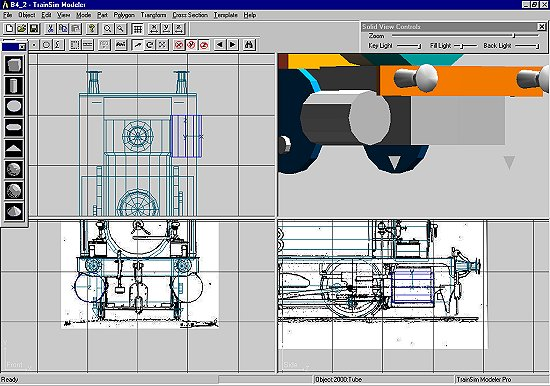
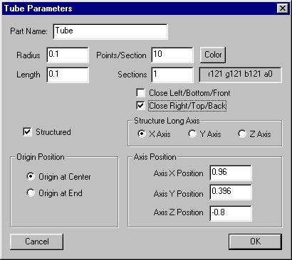
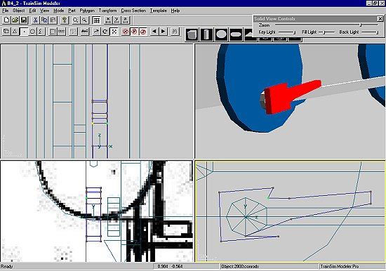
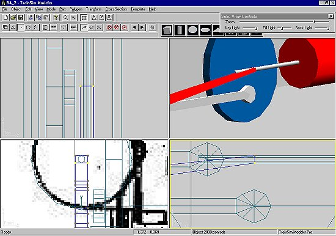
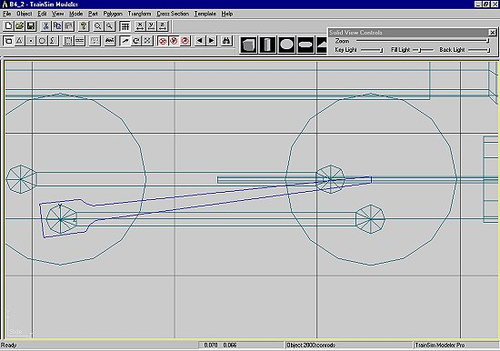
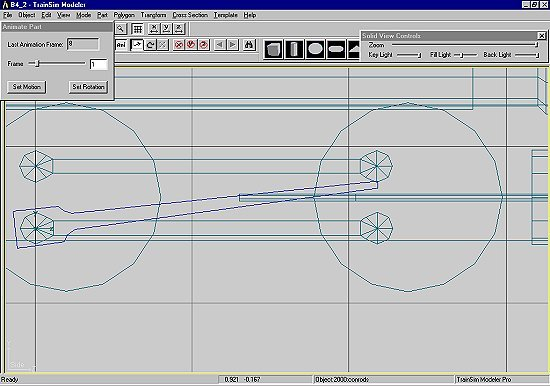
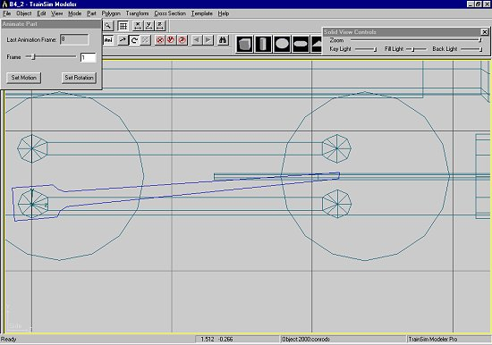
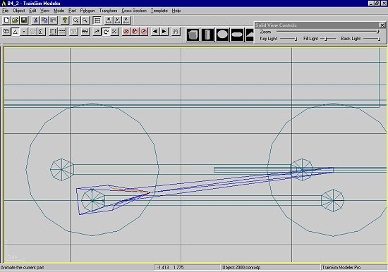
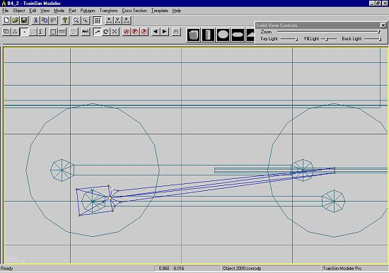
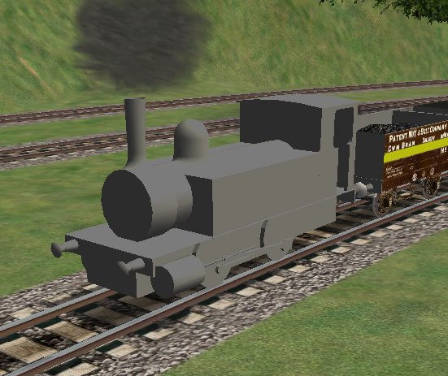

Constructing A Steam Loco Using Train Sim Modeler
Part 4
by Richard Osborne
Connecting Rods And Correcting Polygons
We're getting close now. On a steam loco the single most difficult part to explain is the connecting rod. Once the penny drops, though, the principle is exactly the same for all other rods. Walschaert's, Stephenson, Joy, Baker, Southern or whatever all rely on pivots, motion & rotation. If you're unsure of valve gear animation find a superb freeware animation program at:- http://www.tcsn.net/charlied
I'm not going to cover valve gears in this tutorial - if you master animating connecting rods you can animate anything else on a locomotive. If you study the valve gears you'll also see which parts don't move - some very well respected designers have published locos with basic errors.
As usual this is one way - other designers have their methods. There is no right or wrong way - if it works, it works. I'd like to think this way has an elegance about it.
Before making the rods I've made the cylinders, plain tubes here with the ends split off. You'll also need small diameter tubes at the same centres. These will be used to align the little end & will then serve as piston rods.

The connecting rod can be made from a single tube, closed on the outside. A little sketch shows me that I need 10 points, again I can put it in the correct place by using the same coordinates as the coupling rod.

Without moving the axis - in 'point' mode - move the points until you get a decent shape. Here I've been too impatient - it would have been better to draw the horizontal rod.

If you look at the bottom of the big end in the screen shot above it isn't the shape you'd expect - we'll come back to that. It's become what I term an over-complex polygon.

Nurdle the rod into a decent shape. When happy we need to rotate it - you're about to see why the axis location is so important. Rotate parts the same way you scale them, by dragging the mouse horizontally. When the small end is over the piston rod & you're happy with it - press the 'ani' button; press BOTH ROTATION & MOTION at 0 & 8. You'll note the rotation is the same as the coupled rods. You could save the rotation from those rods & use it on these. That's jumping ahead a bit. We'll do it the long way, if only to emphasise the sequence. We won't need to reload the disk we used for the coupled rod animation if we modified the rods. If not reload the disk; it's always saving these aids into another subdirectory - they'll come in useful for the next loco.

I've gone into 'Expanded Image' mode again. Slide the animation to position 1. MOVE the rod so that the axis is aligned with the coupled rod axis; press MOTION.

Then ROTATE the rod until the little end lines up with the piston rod, press ROTATION. You can't have both 'Move' & 'Rotate' live at the same time.

Do the same for the other positions. Establish a sequence. Move - press Motion; Rotate - press Rotation; Next position. MMRR - next.
That's all there is to it - all the mystique gone.
Save the rod. I've animated gear with the names Walshaerts would know without problem. We've only got 4 rods - we might as well save these as rod03 & rod04.
Before we change rod03 we'll look at the over-complex polygon problem. Cycle, in 'polygon' mode, until you come to the outside face. Subdivide the polygon, as has been said MSTS does this anyway - you're not adding to the polygon count. Look what's happening. TSM finds a "centre of gravity" for the centre point.

Fortunately, in this case, there's a simple cure. Go into 'point' mode & move the centre point towards the big end until the triangles no longer overlap. Save it, load it & convert it to rod04 the same way you made the second coupled rod.

This problem can occur when you don't expect it, couplings, steps etc. In extreme cases MSTS won't load - it'll call it a corrupted part & refuse to accept it. You might have to delete triangles, add polygons or split parts until both TSM & MSTS accept the parts. For this rod I might have needed to add a rectangle for the long part. KEEP PARTS SIMPLE. When things start to get complicated save often, possibly with different names. Export to MSTS often - it's a chore but there's no quick way of seeing you job progressing. It's easier if you can identify a problem, if one should occur, from the last half-dozen parts. Don't forget that MSTS draws EVERY polygon - then decides whether it'll be visible from that camera point. Keep polygons to the minimum - if it won't be seen don't draw it!

We'll need to make crossheads, guide bars & modify the piston rods. The crossheads & rods just move in one dimension, they'll have Motion only. You're on your own for now. The next tutorial will cover texturing in TSM. There are tutorials on the 'net, they're all for 3dstudio or Gmax.